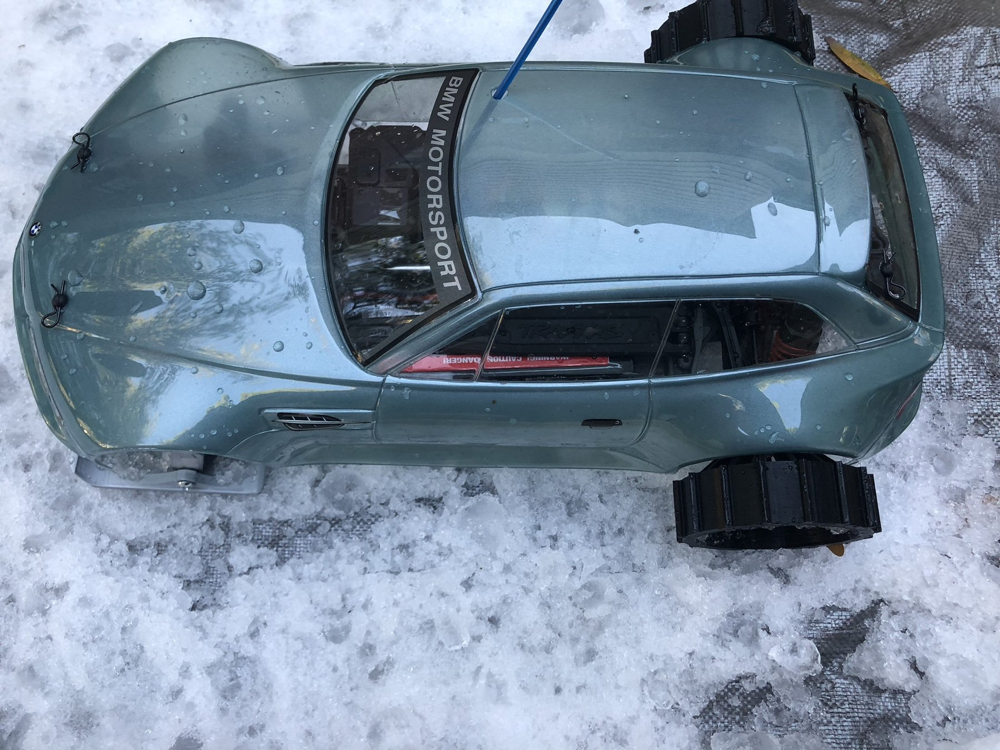

Modified RC car configured for snow testing.
Click any thumbnail to view it larger.
Project Overview
Adapting an RC platform for a completely different surface.
I modified an existing RC car so it could operate on snow rather than relying on its standard road setup.
The project became an early exercise in making mechanical parts, testing them in the real environment, and revising the design when traction or steering did not behave as expected.
What I worked on
- Designed and fabricated front ski assemblies that connected to the existing steering system.
- Experimented with modified rear-wheel traction for snow.
- Built a separate tracked-drive concept as another way to move across loose snow.
- Created a simple snow test course to evaluate the different configurations.